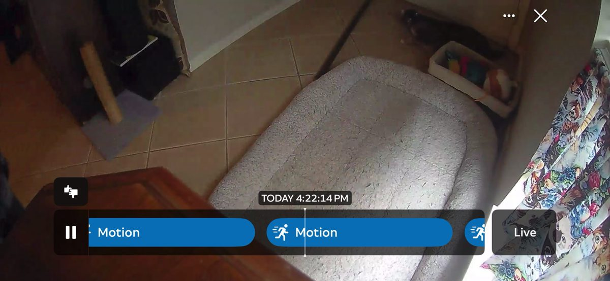
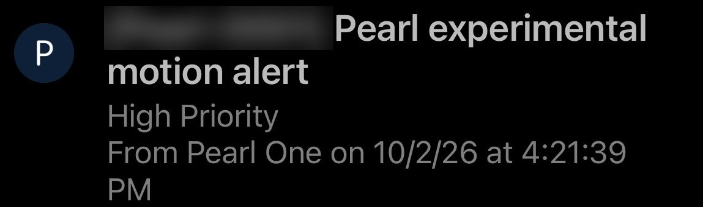
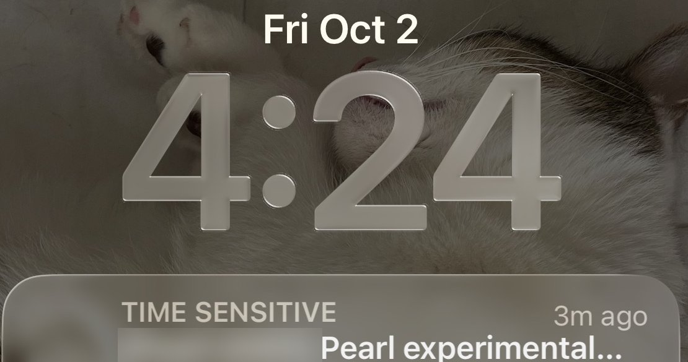

Owner-confirmed seizure, case CS-004
Video, collar motion, and an actual alert record
Pearl, October 2, 2026
The Ring event clock is corroborated by a separate Ring playback time-reference recording. The collar replay and the exact-session alert details independently converge on 4:21:39–4:21:39.994 PM; the phone image confirms the alert was displayed. Delivery latency is not inferred.
- Classification
- Owner-witnessed seizure
- Capture integrity
- 3,096,082 / 3,096,082
- Video
- Two preserved Ring clips
- Clock chain
- Ring + collar + exact-session alert
Video and displayed time
1:35 presentation cut from preserved originals
Real video of a seizure
Ring footage of Pearl having a seizure, about a minute and a half, with no sound. Some people will find it upsetting. The clock, charts and timeline on this page all work without it.
The video couldn't be loaded.
Displayed timeline
4:20:58.000 PM EDT
+0.000 s / 1:35
Collar motion
The dashed cursor follows the shared timeline
Rotation Acceleration variation Collar flag
X Y Z
What each timestamp means
- 4:21:25 PM
- Visible movement landmark on the Ring event clock
- 4:21:39 PM
- Alert details name this exact recording session and Pearl's source event second
- 4:21:39.994 PM
- Collar flag replayed from the finalized collar recording
- 4:21:40.589 PM
- First live owner SEIZURE tap; a caregiving mark, not adjudicated onset
- 4:22:01.012 PM
- Second live owner tap within the same episode; not a second seizure
- 4:22:27.590 PM
- Owner post-ictal mark
Camera, session, and phone proof
Four preserved sources converge on the same event window. Ring event footage shows the episode clock; the separate Ring playback recording corroborates that clock's progression; the finalized collar replay produces 4:21:39.994; and the alert details name this exact session and 4:21:39 PM. The phone image confirms the alert appeared, without claiming a measured network or delivery latency.



Device names, session identifiers and the alert's message body are blurred or cropped in the images above.
What this case supports
This is the strongest matched case: one owner-witnessed natural episode with complete collar capture, timestamped Ring footage, a separate Ring clock reference, owner marks, a reproducible collar flag, and exact-session notification evidence. It does not establish medical performance, sensitivity, specificity, prediction, diagnosis, measured delivery latency, or cross-animal performance.
Preserved originals and derived display
Byte-preserved Ring clips, separate Ring time-reference recording, and phone images; the finalized collar recording and its recovery report; owner confirmation and video catalog; read-only display derivatives. Source media and raw samples remain unchanged. Original files are available to qualified partners on request.